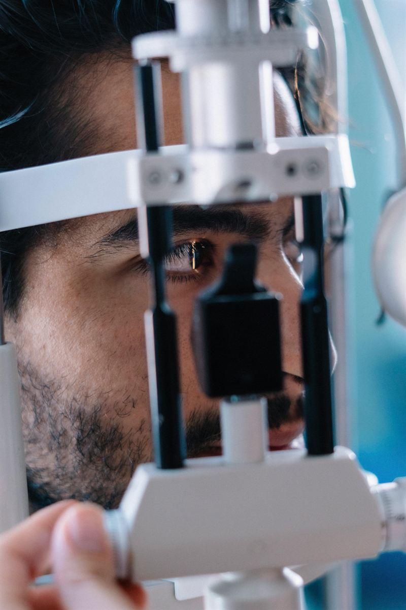
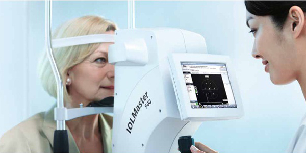
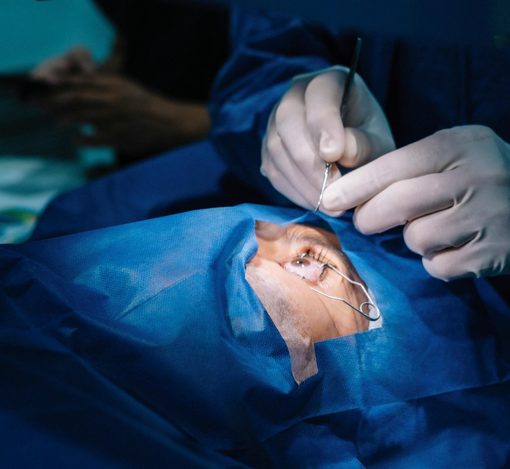
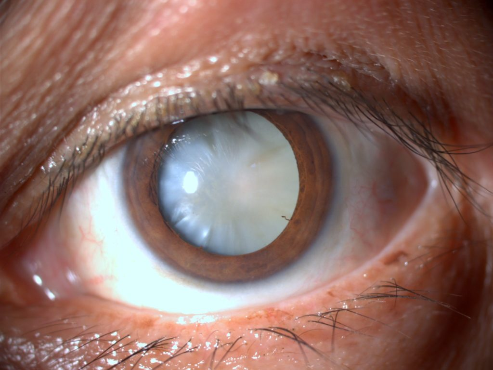

Cataratas y segmento anterior
Evaluación, seguimiento y orientación quirúrgica.
Servicios
Consultas, estudios y tratamientos organizados para orientar cada necesidad visual.

Atención por necesidad clínica Consulta, diagnóstico, seguimiento y cirugía ocular.Especialidades que abarcamos
Podés iniciar con consulta general o ser derivado a una subespecialidad.
Evaluación, seguimiento y orientación quirúrgica.
Control de presión ocular, nervio óptico y campo visual.
Queratocono, topografía, lentes de contacto y cirugía refractiva.
Fondo de ojo, retinografía, OCT y seguimiento de patologías retinales.
Controles visuales, ojo vago, estrabismo y seguimiento infantil.
Evaluación de párpados, órbita, lagrimeo y alteraciones anexiales.

Diagnóstico
Estudios complementarios para orientar el diagnóstico, el seguimiento y la planificación de cada tratamiento.

Aparatología
Equipos específicos para cirugía ocular, procedimientos láser y diagnóstico avanzado.
Cirugías que se realizan
Cada indicación depende de la evaluación médica y de los estudios previos.

Evaluación prequirúrgica, cálculo de lente intraocular y controles posteriores.

Orientación para corrección de defectos refractivos según estudio corneal.

Tratamientos y procedimientos indicados para patologías retinianas según diagnóstico especializado.
Tratamientos quirúrgicos de párpados, vías lagrimales y órbita según diagnóstico.